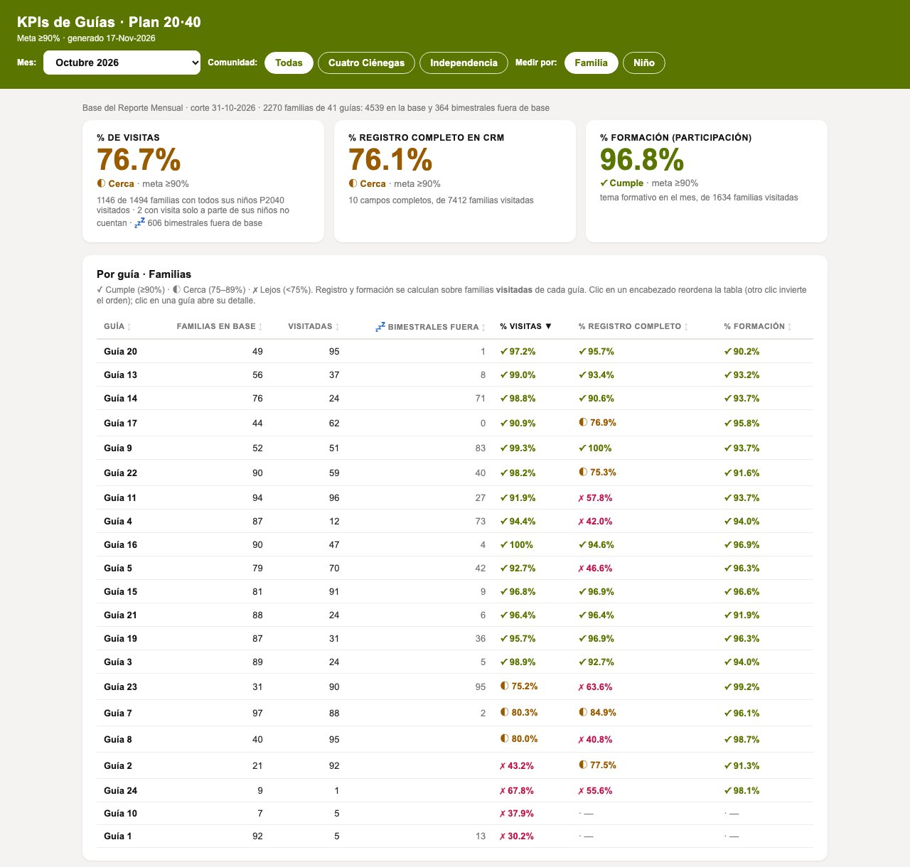
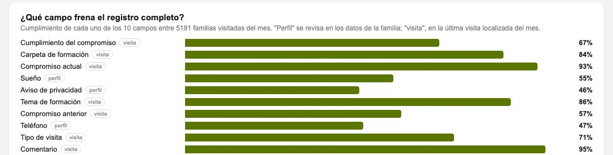

Manual de los KPIs de Guías
Los tres KPIs de cada guía contra la meta del 90 %: cómo se calcula cada uno, la diferencia entre medir por familia o por niño y cómo usar el detalle.
1¿Para qué sirve?
Mide a cada guía con tres KPIs contra la meta del 90 %: que visite a sus familias, que registre la visita completa en el CRM y que imparta formación. Sirve para la evaluación mensual y para saber, guía por guía, qué familias o qué datos le faltan.
2¿De dónde viene la información?
3Cómo moverte en el reporte

- Mes: elige el mes. El que dice «(en curso)» todavía se mueve.
- Comunidad: Todas, Cuatro Ciénegas o Independencia.
- Medir por: Familia o Niño (más abajo se explica la diferencia).
- El renglón gris dice de qué corte salen los datos, cuántas familias y guías entran y cuántas bimestrales quedaron fuera de la base.
4Los tres KPIs
| KPI | Cuenta a… | De… |
|---|---|---|
| % de visitas | Familias (o niños) con visita localizada en el mes: presencial, telefónica o registro de nacido o pre-nacido, hasta la fecha de corte. | La base de la guía, sin las bimestrales que no tocaban ese mes. |
| % registro completo en CRM | Familias visitadas cuyo registro trae los 10 campos completos. | Las familias visitadas de la guía. |
| % formación | Familias visitadas con al menos un niño que recibió formación en el mes (él o su familia tuvo una visita localizada con tema). | Las familias visitadas de la guía. |
Los 10 campos del registro completo
Sueño, Aviso de privacidad (estatus «Completo») y Teléfono se buscan en cualquier miembro de la familia. Los otros siete salen de la última visita localizada del mes: Tipo de visita, Comentario, Tema de formación, Carpeta de formación, Compromiso actual, Cumplimiento del compromiso y Compromiso anterior.

5Medir por familia o por niño
| Vista | Cómo cuenta |
|---|---|
| Niño | Cada niño P2040 por separado. Es el mismo cálculo que el indicador de Visitas del Reporte Mensual. |
| Familia | La familia completa: cuenta como visitada solo si todos sus niños P2040 de esa guía tuvieron visita localizada. Una familia con un niño visitado y otro no cuenta como no visitada. |
💤 Bimestrales fuera de base: misma regla del Mensual. En octubre de 2026 salieron todas las familias bimestrales; desde noviembre, solo las que el Plan del Mes no programa ese mes. Si alguna se visitó de todos modos, aparece marcada en el detalle de su guía, pero no cuenta.
6La tabla por guía y su detalle
- Un renglón por guía con sus familias en base, visitadas, bimestrales fuera y sus tres porcentajes con el símbolo del semáforo.
- Da clic en un encabezado para ordenar la tabla (otro clic invierte el orden).
- En Detalle por guía, al desplegar a una guía ves quiénes le faltan: familias o niños sin visita completa (con ✗ en el niño que falta), visitadas con registro incompleto (con el campo que falta) y las bimestrales fuera de base.
7Preguntas frecuentes
¿Por qué en la vista Familia el % de visitas es más bajo?
Porque basta con que un niño de la familia no tenga visita para que toda la familia cuente como no visitada.
¿Una familia puede aparecer con dos guías?
Sí, en los pocos casos en que la familia tiene niños de dos guías: cuenta para cada una con sus propios niños.
¿Por qué cambian los números del mes en curso?
Porque se recalculan con cada descarga semanal del CRM. Cuando el mes cierra, sus números ya no cambian.